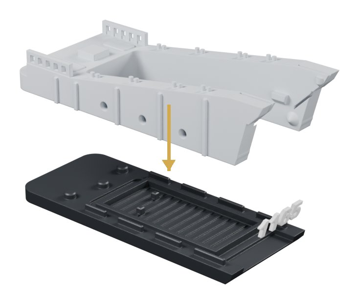
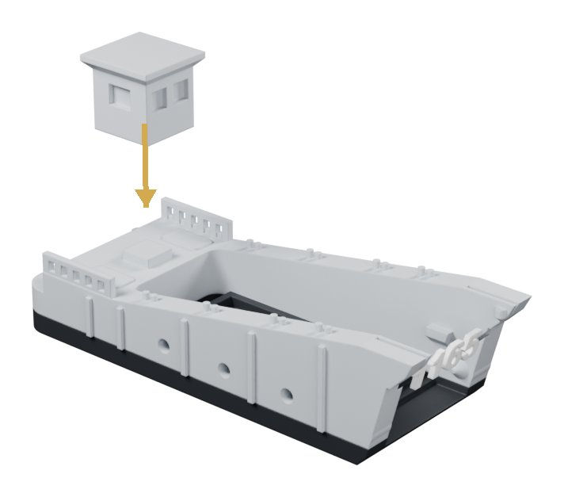
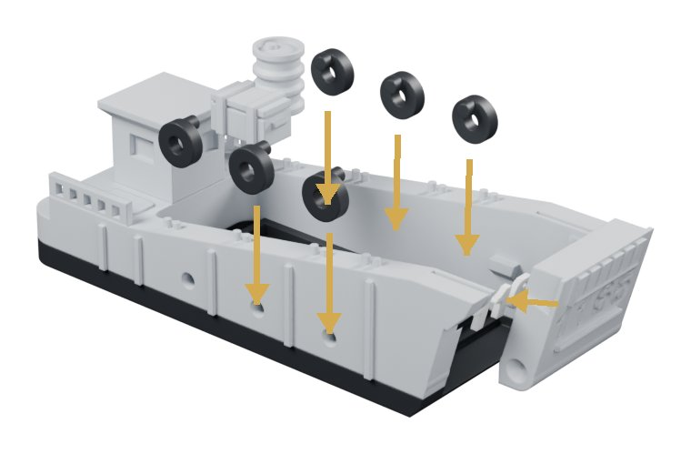

LCM
機械化登陸艇・登陸艇・零件 13 件

組裝順序：照 A → B → C 袋依序拆開。輕推艏門往下，跳板就會放下。
01A 袋｜船體壓上船底

02B 袋｜駕駛台卡上船尾

03C 袋｜輪胎、艏門裝上，油桶彈箱插上甲板

注意事項
- 收藏模型・非玩具・14 歲以上
- 含小零件，請勿讓幼兒接觸，以免誤食
- 細件易斷，組裝時請輕壓，不要硬扳
- PLA 怕熱，勿放高溫車內或陽光直射（超過 50°C 會變形）
- 3D 列印手工製品，表面細微層紋屬正常現象
- 非官方商品，與中華民國海軍無關